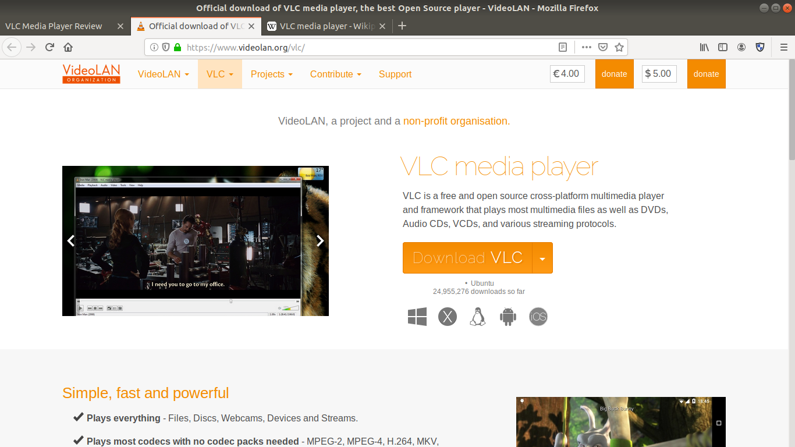
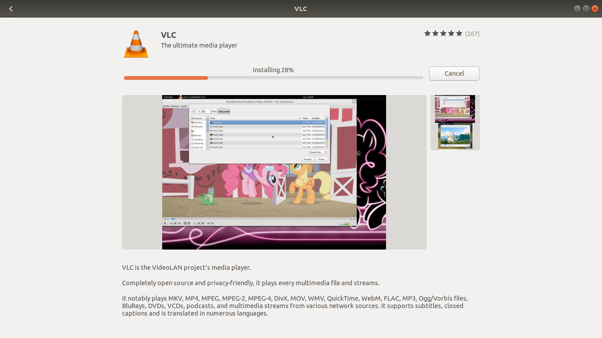
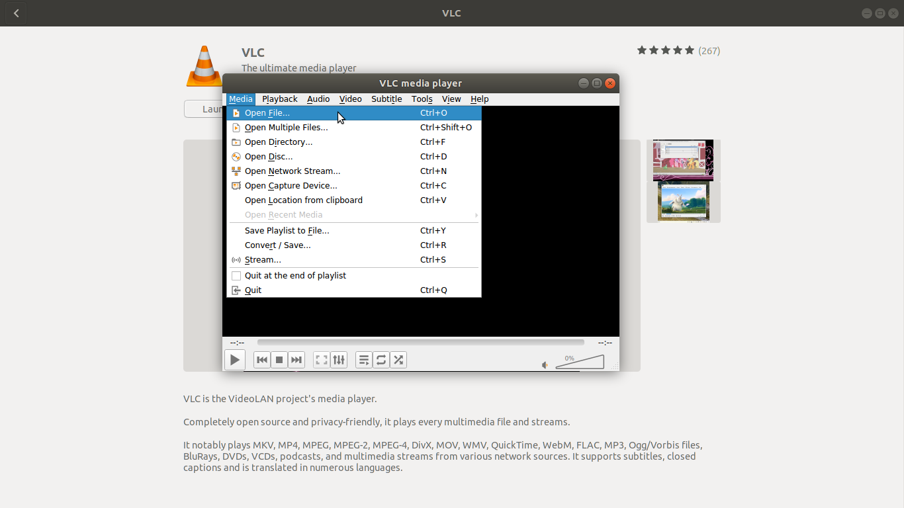

VLC media player is a cross platform open-sourced project that has been around for almost as long as there have been media files (I'm sure NASA used it for the moon landing) and playing them flawlessly.
A project of the VideoLan Organization, VLC is one of the most widely used and most cross-platform video players available today. Originating as an academic project at École Centrale Paris in 1996 VLC was released to the public under the GNU General Public License in 2001, and while originally a small project it has grown to include contributors from around the world.
Digital video files were originally a pain to find and install the right codec for and often this process made it more trouble than it was worth. Since VLC came on scene however that whole mess disappeared for me as I can now just watch downloaded video and video streams without hassle.
I am using an Ubuntu system so exact instructions will vary depending upon your platform, but the process is this simple for the major platform choices.
Follow the download link at the bottom of this article and download the installer to a convenient location on your computer.
Run the installer and wait for it to complete.
Select "Media -> Open File...", choose your media file, and enjoy.
